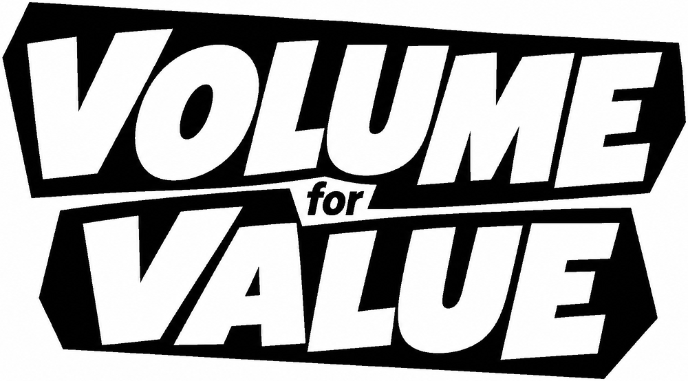
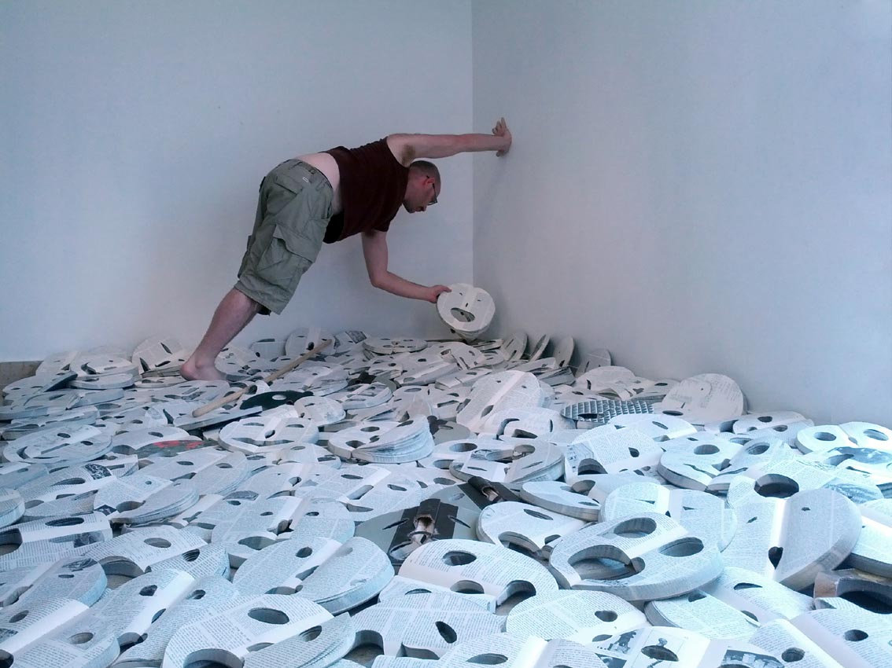
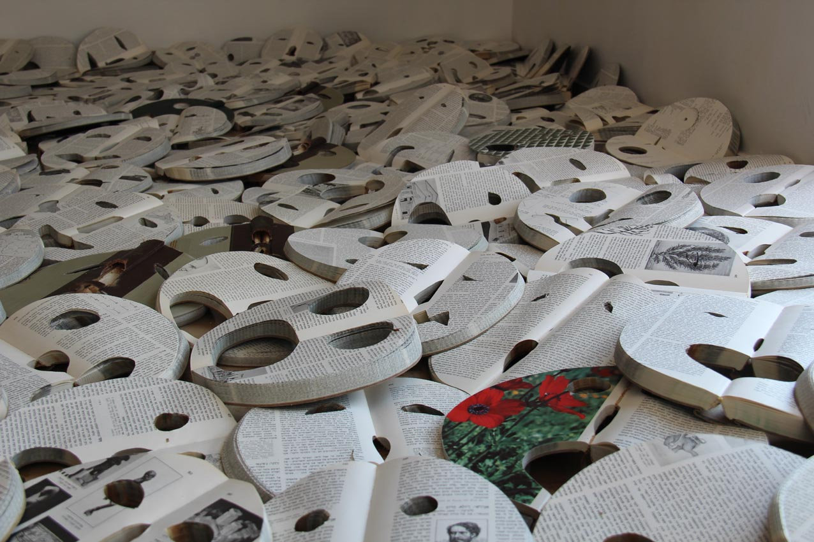
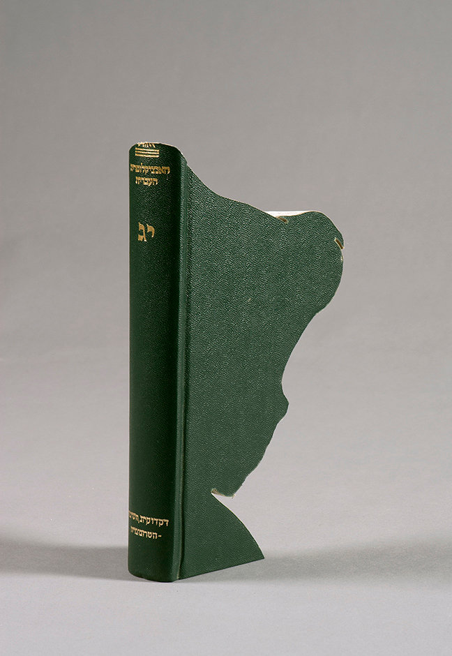
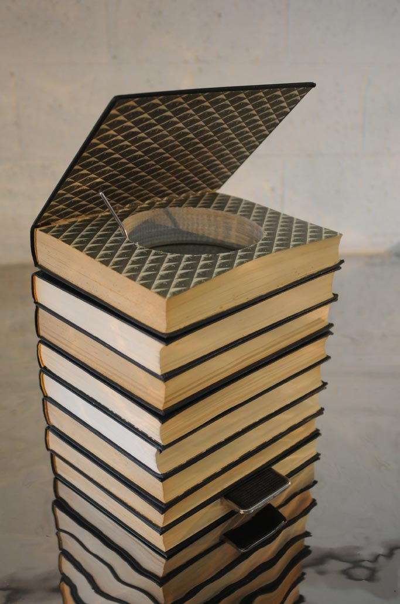
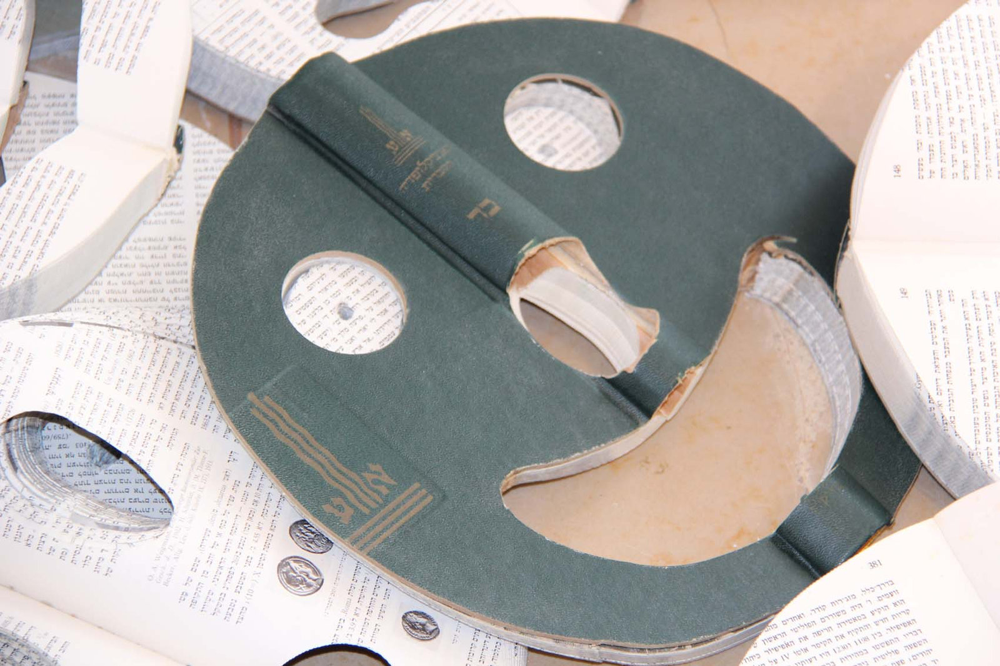
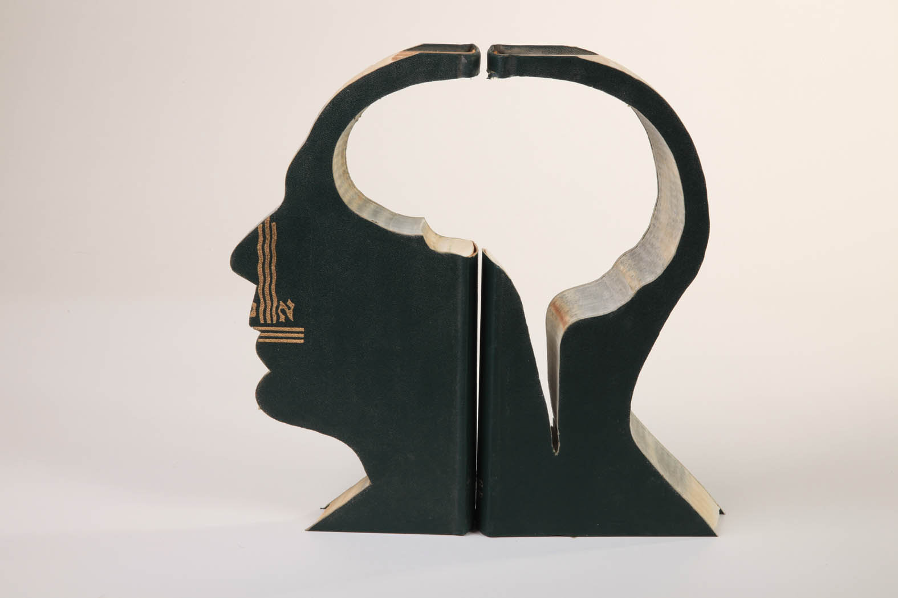

{{count}}
The Hebrew Encyclopedia is leaving our homes. Bring it to the studio instead.
Free your old encyclopedias from the shelf. Pass them forward - the studio will give them a new Value through art.






Let your volumes roll.
Vol. XIV · given by {{creditName}}
Printed on the work’s label and certificate
Collected in Tel Aviv or dropped at the studio.
313
Yours is the next one. We’ll message you on WhatsApp within a day to arrange pickup.